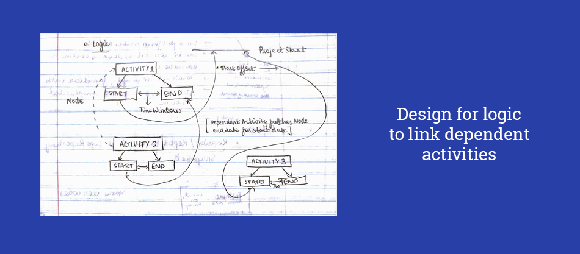

In the summer after my freshman year (2016), I got the opportunity to work for Amadeus North America, in Waltham, on the outskirts of Boston, as a software engineering intern. My work is covered by an NDA, so I'm not allowed to share any screens.
My work involved full stack web development. Though the initial vision for the project didn't involve a very well-integrated user interface, I felt that I enjoyed taking a break from building the backend and building the user interface, especially when I was stuck on a problem. I was given a choice of technology stacks being used by web developers at Amadeus, which included backend languages like PHP and Java. I didn't really have experience with using Java in a web development setting, so I went for PHP. I also chose to use Slim, a PHP microframework, to actually build the application around the MVC architecture, which isn't really native to PHP.
